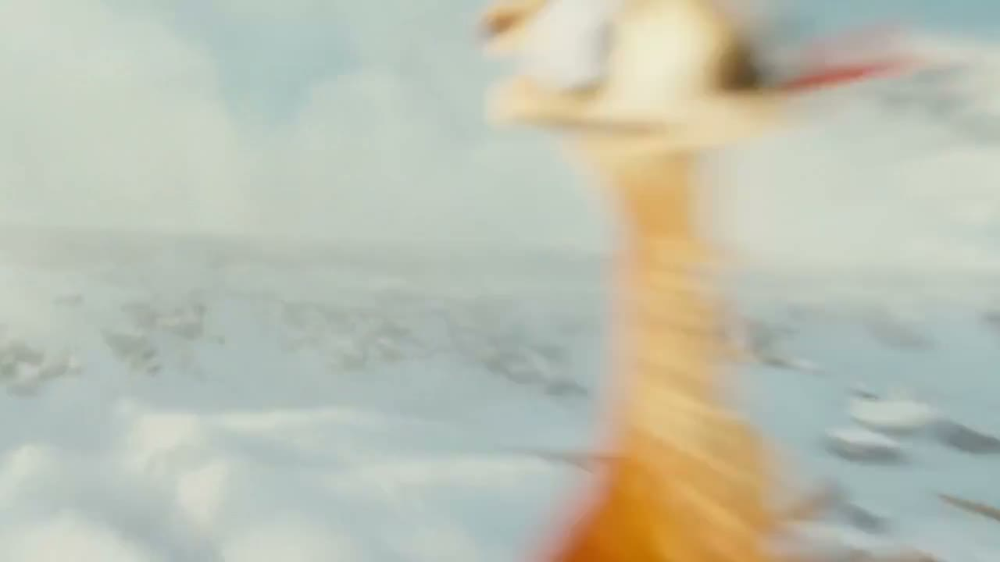

Produção audiovisual · Grafismos, textos e máscaras
Kit leve. Pronto para o Canva.
Três clipes e uma foto de Caminandes 3: Llamigos, as mesmas mídias da aula 11. São só 2,2 MB de mídia, para o envio ao Canva terminar rápido em cada computador.
Sem instalação. O trabalho acontece no Canva pelo navegador, com a conta que a turma já usa. Basta extrair o ZIP e enviar os arquivos em Uploads → Enviar arquivos. O passo a passo de preparo está em COMECE-AQUI.txt, dentro da pasta.
Conteúdo do ZIP · pasta Aula12-Canva
08-paisagem.mp4· 0,66 MB · 7 s
02-encontro.mp4· 0,65 MB · 7 s
04-fruta.mp4· 0,84 MB · 7 s
foto-fruta.jpg· 0,07 MB
COMECE-AQUI.txt· preparo no Canva
CREDITOS.txt· autoria, fonte e licença
Total de mídia: 2,21 MB (três MP4 em 720p e uma foto). O ZIP inteiro tem 2,2 MB.
Cenas · mesmas mídias da aula 11
08-paisagem.mp4Vídeo · 7 s02-encontro.mp4Vídeo · 7 s

04-fruta.mp4Vídeo · 7 sfoto-fruta.jpgFoto
Preparar no Canva
Extraia Aula12-Canva.zip e entre no Canva pelo navegador.
Clique em Criar design → Vídeo (1920 × 1080).
Em Uploads → Enviar arquivos, escolha os três MP4 e a foto da pasta.
Espere o envio terminar antes de começar.
Salve o projeto com o nome Aula 12 · seu nome.
Os pedidos do cliente aparecem nos slides, um de cada vez.